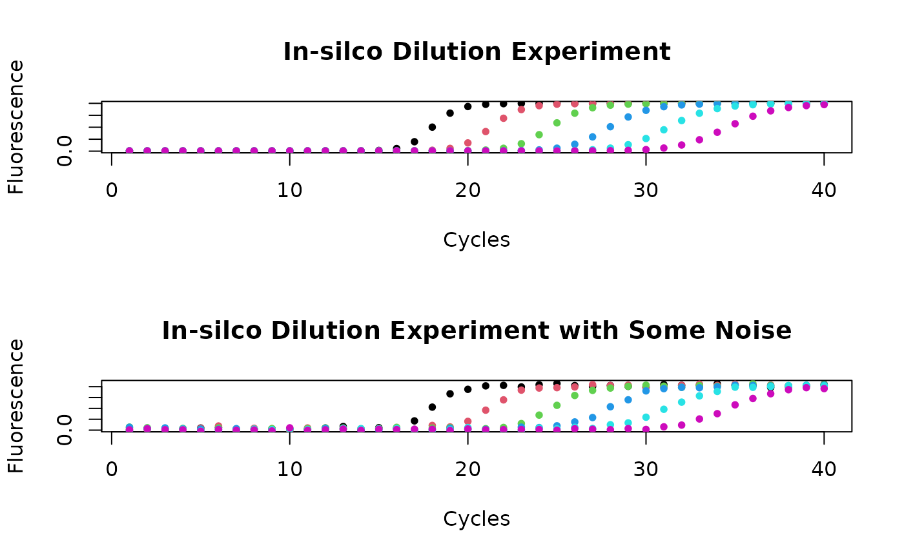
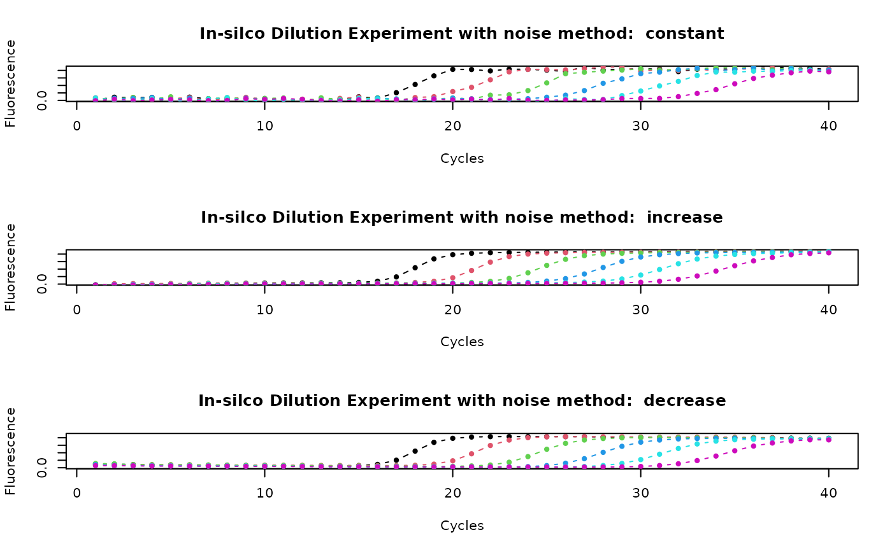

AmpSim.RdThis function is a simple simulator of an amplification reaction based on a
5-parameter Richards function. This simplified approach was chosen because it
is impossible to model the shape of any amplification curve. An
implementation of realistic models is ambitious and not conclusively
addressed in the literature. First, they have to take ``all'' random
effects of noise into consideration and second, they need to be generic
enough to cover all amplification processes. More sophisticated mechanistic
models and simulations have been proposed elsewhere mehra_2005,
cobbs_2012. This approach of AmpSim is similar to the
pcrsim function from the qpcR package, which offers
simulations of sigmoidal qPCR data with goodness-of-fit analysis by
Ritz and Spiess 2008.
AmpSim(cyc = 1:35, b.eff = -25, bl = 0.05, ampl = 1, Cq = 20, noise = FALSE, nnl = 0.025, nnl.method = "constant")
| cyc | is a vector containing the cycle values. |
|---|---|
| b.eff | can be used to adjust the amplification efficiency. |
| bl | is used to define the base level (minimum) of the background range. |
| ampl | defines the plateau (maximum) of the amplification reaction. |
| Cq | defines approximately the quantification point (Cq) of the amplification reaction. |
| noise | adds some noise to the amplification reaction. |
| nnl | level of noise during the amplification reaction. |
| nnl.method | trend of noise level during the amplification reaction. "constant" uses same noise of amplification, "decreasing" leads to less noise at the end of the amplification reaction, and "increasing" leads to more noise at the end of the amplification reaction. |
AmpSim is a simple simulator for amplification reaction.
This function has several parameters which can be used to simulate the
amplification curve. b.eff and Cq are most connected with
another. Thus changing one of them will change both values. Cq can be
used to define an approximate Cq value. The expression "approximate Cq value" is
used here because the actual Cq value is dependent on the users preferred method
(e.g., Cy0 method, Second Derivative Maximum (SDM) method, threshold method).
AmpSim can be used to compare an experimental system to a
predicted model. Moreover it can be used to simulate data with noise, missing
values (NA), signal-to-noise ratios, photo-bleaching and other influences on a
PCR reaction.
A Highly Versatile Microscope Imaging Technology Platform for the Multiplex Real-Time Detection of Biomolecules and Autoimmune Antibodies. S. Roediger, P. Schierack, A. Boehm, J. Nitschke, I. Berger, U. Froemmel, C. Schmidt, M. Ruhland, I. Schimke, D. Roggenbuck, W. Lehmann and C. Schroeder. Advances in Biochemical Bioengineering/Biotechnology. 133:33--74, 2013.
Ritz, C., Spiess, A.-N.: qpcR: an R package for sigmoidal model selection in quantitative real-time polymerase chain reaction analysis. Bioinformatics 24(13), 1549--1551 (2008). doi:10.1093/bioinformatics/btn227. PMID: 18482995.
See also qpcR.news
Stefan Roediger, Michal Burdukiewicz
# Example one # Simulate a qPCR reaction with AmpSim for 40 cycles. # Use an in-silico dilution of the template be adjusting # the Cq parameter. A change of 3.32 cycles corresponds # approximately to a 10-fold dilution. par(mfrow = c(2,1)) plot(NA, NA, xlim = c(1,40), ylim = c(0.01,2), xlab = "Cycles", ylab = "Fluorescence", main = "In-silco Dilution Experiment") cycle.dilution <- seq(18, 35, 3.32) for (i in 1:6) { lines(AmpSim(cyc = 1:40, b.eff = -25, bl = 0.01, ampl = 2, Cq = cycle.dilution[i]), type = "b", col = i, pch = 20) } # Example two # Simulate a qPCR reaction with AmpSim for 40 cycles and some noise. plot(NA, NA, xlim = c(1,40), ylim = c(0.01,2.2), xlab = "Cycles", ylab = "Fluorescence", main = "In-silco Dilution Experiment with Some Noise")cycle.dilution <- seq(18, 35, 3.32) for (i in 1:6) { lines(AmpSim(cyc = 1:40, b.eff = -25, bl = 0.01, ampl = 2, Cq = cycle.dilution[i], noise = TRUE, nnl = 0.05), type = "b", col = i, pch = 20) }par(mfrow = c(1,1)) # Example three # Apply constant, increasing, decreasing nose to # amplification data. par(mfrow = c(3,1)) method <- c("constant", "increase", "decrease") for (j in 1:3){ plot(NA, NA, xlim = c(1,40), ylim = c(0.02,2.2), xlab = "Cycles", ylab = "Fluorescence", main = paste("In-silco Dilution Experiment with noise method: ", method[j])) cycle.dilution <- seq(18, 35, 3.32) for (i in 1:6) { lines(AmpSim(cyc = 1:40, b.eff = -25, bl = 0.02, ampl = 2, Cq = cycle.dilution[i], noise = TRUE, nnl = 0.08, nnl.method = method[j]), type = "b", col = i, pch = 20) } }